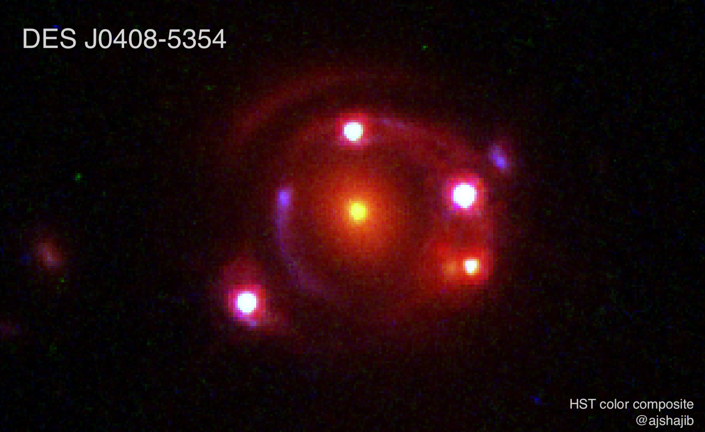

Time-delay cosmography
The \(H_0\) tension — the \(>\)5\(\sigma\) disagreement between CMB-based and distance-ladder measurements of the Hubble constant — is one of the most pressing puzzles in modern cosmology. Time-delay cosmography offers a fully independent local-Universe route to \(H_0\). I led the analysis of DES J0408\(-\)5354, a rare double-source-plane lens, obtaining what was at the time the most precise \(H_0\) measurement from a single system (3.9%; Shajib et al. 2020). As a core member of the TDCOSMO collaboration — corresponding author on the most recent collaboration paper (TDCOSMO 2025) — I am now using JWST NIRSpec IFU data from programs I co-PI to push toward a 2% \(H_0\) measurement free of any mass-profile assumption.